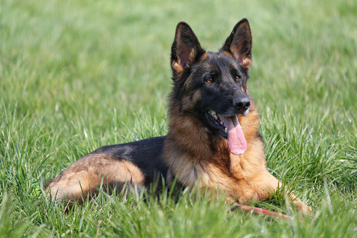

About the German Shepherd Dog
German Shepherd Dogs are large dogs that are approximately 22–26 inches at the shoulder and weight approximately 66-90 lbs., with males being larger.
They have long muzzles with strong jaws and the eyes are always brown with an intelligent, bright, and self-confident gaze. Their ears are large and stand erect, though puppies are born with floppy ears that stand as they grow.
German Shepherds are loyal and highly intelligent dogs that make great companions. Due to their high intelligence and trainability, they are commonly used as police and service dogs.